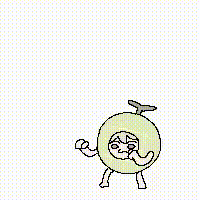
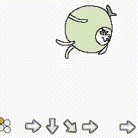
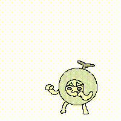

연애는 아무나 해도 사랑은 아무나 못하는 이유.jpg
댓글
연애도 똑같은데 뭐
대전제는 동의하지만 상대에게 무언갈 기대한다고 진정한 사랑이 아니라고 생각하진 않음 물론 최고의 상황은 서로서로 사랑과 정성을 주는것이지만 모든 연인 관계가 그런것은 아니니...
사소한것 까지 정확하게 반반을 요구하거나 내가 준것보다 더 한것을 요구하면 사랑이 아니라고 말할수 있겠지만 사람은 무조건 주기만 하다간 방전될수 밖에 없음 이때 상대방이 주는 사랑을 내가 어떻게 받아들이느냐가 사랑인지 장사인지 가름한다고 생각함
내가 100만큼 줘도 상대가 10만큼만 주면 행복한 사람이 있다고 가정했을때 상대방이 10도 안줘서 섭섭하고 서운하다면 난 이건 사랑이라고 봄 오히려 상대방이 장사를 하고 있는거지
상대방이 미리 거절을 해줘야하는데 받기만 하고 피드백이 없으면 개빡치긴해..
기대하는 거까지는 ok.
왜 안해주냐, 왜 나보다 적게 해주냐... 스님은 이거 말씀하시는 거 같은데?
그거 비교하고 계산하는 거 자체를.
야겜 하지 마라.
섹스는 야겜처럼 자극적인 욕망과 판타지밖에 없는
자기 만족 행위가 아니다.
섹스는 넘실거리는 여름 바다에서
어린 너와 너의 연인이 살 냄새와 모래 냄새와
바닷바람 소금내가 섞여 비릿한 피부를 맞대며
석양으로 물드는 머리카락에 얼굴을 파묻고 하는 그런 것이다.
겨울 밤 자취방에서 갈 곳 없는 몸뚱이를 기대가며
사는 것의 공포를 뿌리치려 안달난
네 여자의 눈동자를 들여다보고 하는 것이다.
창백한 방에 틀어박혀
삼각김밥이 컵라면에 불량식품을 먹고
텅 빈 네 삶의 공간에서
네 욕망과 네 슬픔과 네 공허를 허비하지 말아라.
컴퓨터를 끄고 집 밖으로 나가라.
사랑해라.
섹스도 해라.
전등 어스름한 골목길에서 잊혀진 네 순수를 위해 울어라.
기껏해야 밖에서도 힘싸움하고 애들 밟고 까이고 떠들고 웃고 즐기기나 하겠지
남자가 여자를 사랑한다는 그 참된 의미를 이해나 하겠냐?
슬퍼서 눈물 흘린다는 말의 참의미를 깨달을수나 있겠냐?
야겜 안하는새끼는 나중에 커서 지 부모도 잡아먹을새끼가 틀림없어.
내가 보증한다.
개새끼들...

디시문학 ㅅㅂ ㅋㅋㅋㅋ
니가 진짜 제대로된 야겜을 안해봐서 그래
아니 이걸 왜 복사해와 ㅋㅋㅋㅋㅋㅋ





그러니깐 어머니한테 잘해드려라
안녕하세요 저는 저얼대 손해를 본 적 없는 거상입니다
나는 사랑을 했구나
그럼 대가 없는 사랑은 건강하기만 한가? 자본주의 사회에선 기본 마인드가 내가 무언가를 하면 어떤 댓가를 받는게 당연한 사실인데, 모두가 욕망 없는 유토피아에서 살 수 있는 현실도 아니고. 현실적으론 접근하기 힘든 방법론 같음.
그래서 종교의 영역인듯
그런사람 나타난다
내가 기대한것보다 더 큰 사랑을 주는사람
그럼 나도 더 주고싶어짐
내가 이만큼 하니까 너도 이만큼 해줘가 아니라
그냥 서로 따질거없이 한없이 해주는거야
살다보니 나타나더라
그때 잡아라 진짜행복해진다
이 댓 보니까 왜케 부럽냐 ㅜㅜ
멋진말이네요 닉넴과 안어울리게
아가페적 사랑이 아니면 그거 다 장사라고 쓸데없이 사랑이라는 개념의 허들을 높이는 것도 별로임
알잘딱갈센 잘하는 사람을 만나면됨 사람은 은근히 플마로 계산하기보단 그사람의 태도를봄
이게 저 짤 잘라놓고 있는 그대로만 보니까 자본주의 사회니 연인은 그런게 아니니 별말들이 많네 ㅋㅋㅋ
ㅋㅋㅋ ㄹㅇ
나도 아까 사랑문제때문에 내 도시에 있는 절간다녀왔는데 저게 무슨 말인지는 알겠음. 근데 현 시대에 결혼이라는 제도 안에 그래도 남자가 80정도 주면 여자가 60정도 줘야 이어지지 않나? 아직 내가 잘 모르는 분야인가 잘 모르겠다. 손해나 이익 따지는게 금전적인건 전혀없는데 그걸 마음으로 치유해주거나 응원해주면 다 씻어 나가는데 그런 사람도 잘 없고 내 잘못인가 모르겠네
가족끼리 저얘기듣고 집에오면 존나싸움
법륜스님이 정답은 아님
부처님 처럼 사랑할순없음
서로 살아온 방식을 받아들이고
이해하면 마음편한데
상대를 개조 하려고 들면 파국
다 내줄거 같이 굴었다가도 약아빠진 장사치처럼 굴기도 하고 죽일듯 밉다가도 대신 죽어줄만큼 아끼는게 또 사랑의 재미인거지
둘다 못해요 시발..
? 헤어져라
서로 이해하기 싫으면 헤어져야지
맞는 말이고 나도 저런 마인드로 사랑을 줬었는데
맘 안에서 쌓이는 서운함, 섭섭한은 어쩔수 없는거라..
저걸 못함
그래서 우리가 중생임(어리석은 무리)
둘 다 안 해봤는데 뭐